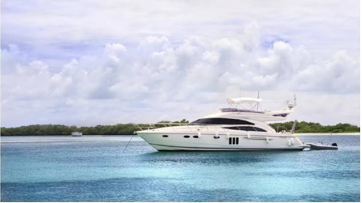
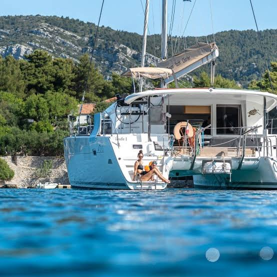

Everyone knows the advice: get three quotes. That is good advice for a roof and mediocre advice for a boat, because marine insurance does not work the way the rest of your insurance works. Call three agents, describe the boat three slightly different ways, and you get three numbers that cannot be compared to each other. Worse, you can accidentally lock yourself out of the market that would have given you the best deal.
Running a real bid is not hard, it just has to be run deliberately. Here is how I coach buyers through it. I am a broker, not an insurance agent, so your agent binds the policy and answers the coverage questions. What follows is process, which is the part buyers usually get wrong.
Understand who you are actually calling
Yacht insurance reaches you through a chain, and knowing the links explains a lot of otherwise confusing behavior. At the front is the retail agent, the person you talk to. Some retail agents specialize in marine and write yachts every day. Many do not, and treat a boat as an accessory to a homeowner account. Behind some retail agents sits a wholesale broker or managing general agent, a firm with authority to place risks with markets a retail agent cannot approach directly. At the end are the carriers: domestic marine insurers, program markets, and the Lloyd's syndicates that still write a large share of Florida hull.
Two things follow. One good marine agent may reach five or six markets for you, so three agents does not mean three options. And the same carrier can sit behind two different agents you called, which brings us to the mechanic nobody warns buyers about.
The rule that makes uncoordinated shopping backfire
In the surplus lines world, a market is generally worked by whoever submits first. When an agent sends your boat to an underwriter, that underwriter is now that agent's to work. If a second agent sends the same hull, same owner, same information to the same underwriter a day later, the usual answer is a decline as a duplicate submission, not a second and better price.
So calling five agents and telling each to go get you the best deal does not create competition. It creates a race, and the markets get claimed in whatever order the calls happened to go out. You end up with fewer live options than if you had done less.
The fix is the single most useful thing in this article. Ask each agent, in writing, which specific markets they intend to approach, and clear the list before they submit. Two or three agents with non-overlapping lists will cover the market far better than five agents tripping over each other. A good marine agent will not be offended by the question. They deal with it constantly, and most will volunteer the list if you ask.
Build one packet and give everyone the same one
The other reason quotes come back incomparable is that the inputs were different. Underwriters price what they are told, so write the facts down once and hand the identical packet to every agent.
Include the year, builder, model, length, hull material, engine make and horsepower and hours, and the hull identification number. The purchase price and the insured value you are asking for. The full current survey report, out of water if you have it, plus your plan for every recommendation in it. Where the boat will be kept, the marina name, and whether the slip is fixed or floating, covered or open. Your named-storm plan, including the yard that will haul her if that is the plan. Your boating resume, which matters more than new buyers expect: years of experience, prior boats and sizes, licenses, training, and whether a captain will be aboard. And your loss history, complete.
That last one is not optional and not a place to be optimistic. Marine insurance holds you to a higher standard of disclosure than most policies, and an omission on the application can unravel a policy long after you thought the file was closed.
"The cheapest quote in the stack is almost always cheapest because it covers less. Lay the forms side by side and the price differences start explaining themselves."Clark Haley, Haley Yachts
Compare the form, not the premium
When the quotes come back, resist sorting by price. Build a grid, put these down the side, and fill a column per quote.

Deductibles, plural. There is the standard hull deductible and usually a separate named-storm deductible expressed as a percentage of insured value. Convert that percentage into actual dollars for your boat before comparing, because two quotes at the same premium can be thousands apart on the day it matters.
Salvage and wreck removal. Ask whether these limits sit inside the hull limit or in addition to it. In addition is meaningfully better, and salvage costs on a grounding can be startling.
Liability structure. Protection and indemnity limit, fuel spill and pollution liability, medical payments, uninsured boater. Check the liability limit works with any umbrella you carry, since umbrellas usually require a stated underlying minimum.
Machinery and consequential damage. Whether engine damage flowing from a covered event is picked up, and how the policy treats wear, corrosion and manufacturing defect. Older boats live and die on this wording.
Navigation limits and lay-up warranties. Confirm the policy covers where you actually intend to go, including the Bahamas and the Gulf Stream crossing if that is the plan.
The warranties. Every condition the policy imposes on you: safety equipment certification schedules, survey intervals, captain requirements, mooring and line specifications, storm plan obligations. These are promises, not suggestions, and breaking one can cost you the policy rather than just the claim.
Sublimits and depreciation. Canvas, sails, outboards, electronics, tender and toys, personal effects, and whether the tender is covered underway on its own.
Ask for every quote in writing with the warranties and conditions spelled out, not a premium in an email. If an agent will not put conditions in writing before binding, that is information too.
Timing, and the Florida calendar problem
Start three to four weeks before your target closing. Underwriters do not work at closing speed, older boats take longer, and any quote is subject to conditions you may need time to satisfy.
Then there is the seasonal wrinkle. Many Florida markets stop binding new coverage while a named storm is active in or near the basin. The window closes with no notice and can stay closed for days. If you are closing in August, September or October, get quotes early and bind early. A buyer with a perfect file and a good price can still miss a closing because a system spun up in the Caribbean on Tuesday.
At renewal, do it again, but not every year
Re-market every two or three years, or any time the boat, your use of her, or the market

Either way, do not auto-renew without reading the renewal terms. Warranties get added at renewal, deductibles get restructured, and named-storm terms tighten after a bad season. The renewal you did not read is the policy you own.
Where this fits
Getting bids is the middle step. Before it comes understanding what your specific boat does to a submission, which is a different exercise on an older boat. After it comes deciding which company you actually want standing behind you, which is not the same question as which is cheapest. That is covered in how to vet a marine insurance company.
If you are under contract and want help sequencing the survey, the submission and the closing so nothing falls through, let's talk. Reach out to Clark Haley at Haley Yachts and I will point you to marine insurance specialists who write yachts for a living, and make sure your survey and your timeline set the file up properly instead of working against it.